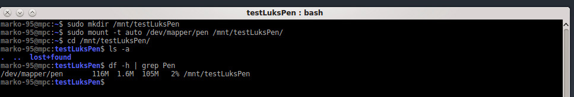
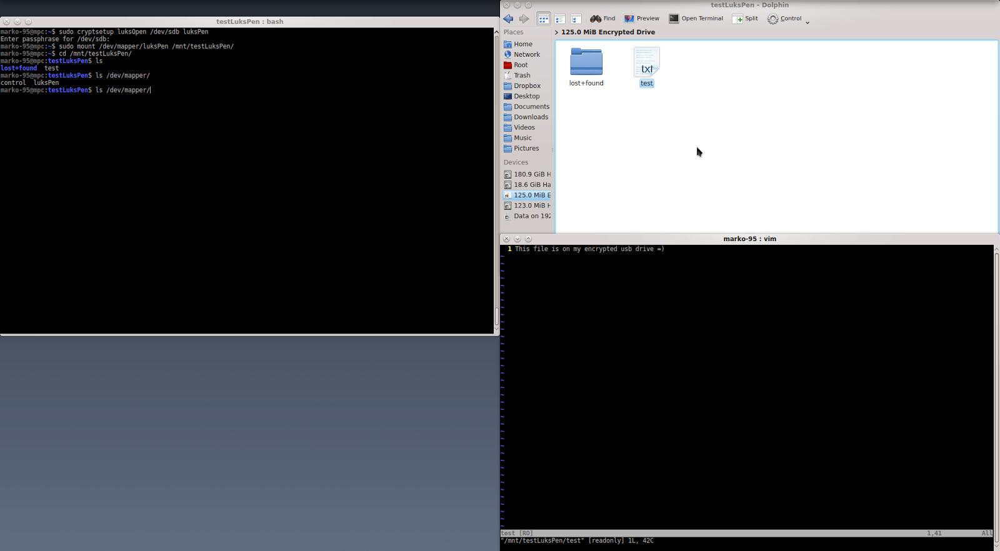

2016-10-31
first of all, we need to install cryptsetup on our system. I'm on debian so:
# apt-get install cryptsetup
after connecting the drive, we need to get the device name assigned to it:
# fdisk -l
as you can see, in my case is /dev/sdb.
now, this step will destroy all data on the drive, MAKE SURE YOU HAVE A BACKUP BEFORE PROCEEDING.
umount your drive and then type:
# cryptsetup -y -v luksFormat your-device
-y: query for passwords twice
-v: verbose
and follow the instruction on screen.

of course, several other options can be added, I'm ok with the defaults, but if you want, in the info links, you will find suggestions to add other options.
ok, the device is encrypted. what's missing? a file system!
# cryptsetup luksOpen your-device name-you-want
to unlock the drive, you will be asked for the password of course
# mkfs -t ext4 /dev/mapper/name-you-used-before
and you will get a result similar to this:

now we can actually mount the drive. here a picture, I'll explain in the next section.

many desktop environments (at least KDE) are capable to recognize a LUKS drive
when it is connected and do the dirty work for you

but, since I'm a fan of command line (mainly because is a "universal" interface among distributions), I'm going to show that way.
zero step: connect the drive and check the device name
first step: unlock the drive
# cryptsetup luksOpen your-device name-you-want
second step: mount the drive on a mount point
# mount /dev/mapper/name-you-used-before mount-point-you-like
(with file systems different from ext could be required to specify the type)
done!

things are easy here:
# umount mount-point-used-before
# cryptsetup luksClose name-used-before
done!
this isn't a professional tutorial, no argument has been deepened, it's just a quick way to set up an encrypted pen drive (or external hard disk, sd card, etc...) with a password that works well on linux.
I encourage you to explore more these topics starting from the links provided at the beginning of the post to get a better understanding of what we did today.